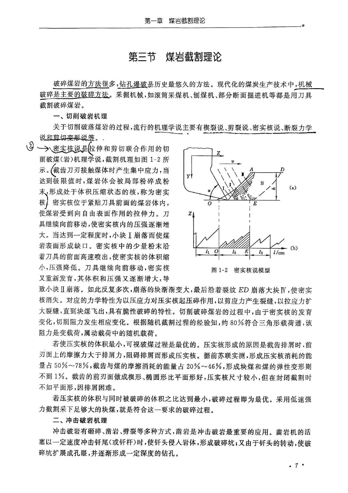
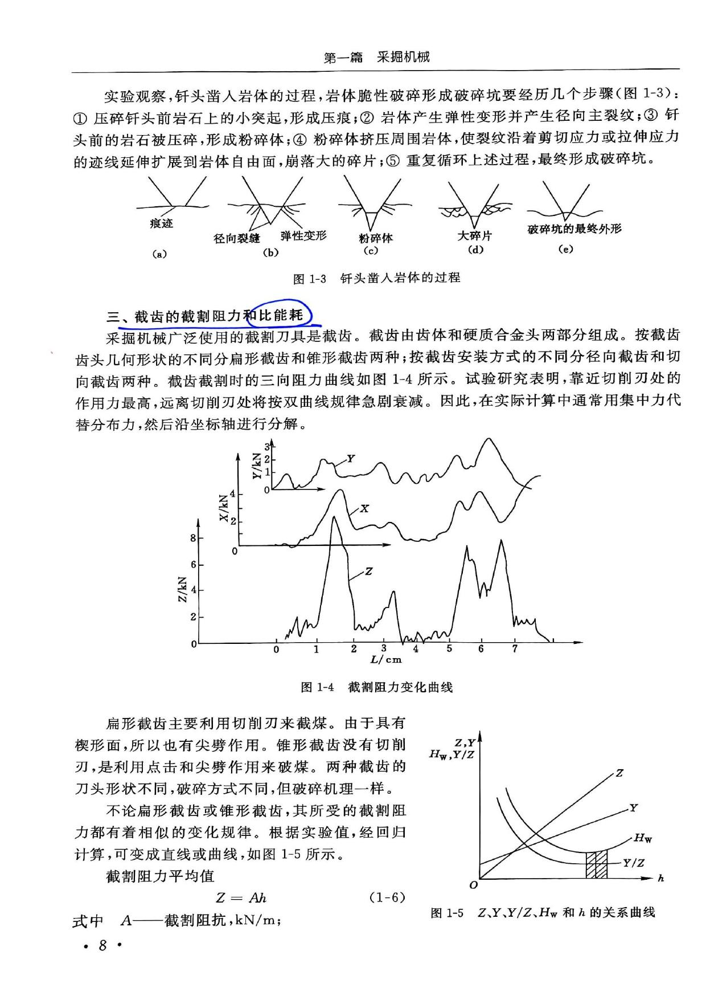
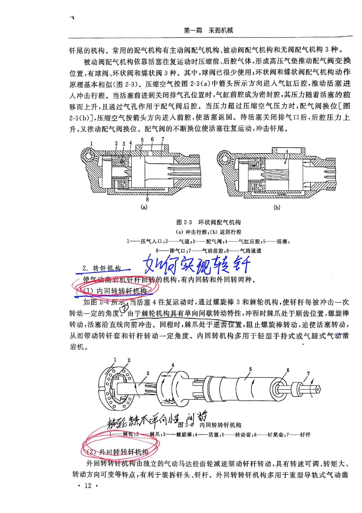
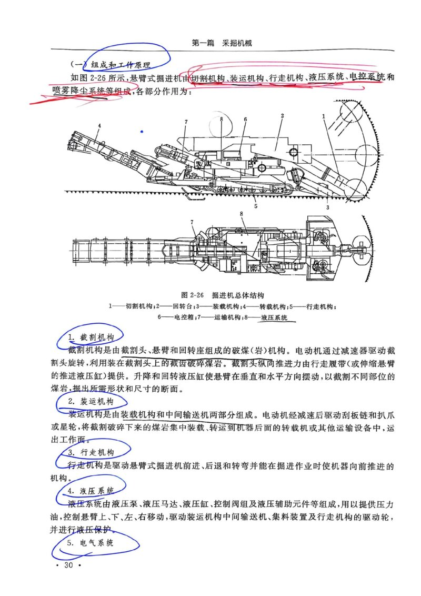

矿山机械
期末复习重点总结
教材：普通高等教育"十一五"国家级规划教材
主编：付子锐（河南理工大学） 李炳文 万丽荣 柴光远
第一篇 采掘机械
第一章 煤岩截割理论
煤岩截割理论是矿山机械的基础，重点掌握煤岩的物理机械性质、截割阻抗、比能耗及密实核破岩机理。
第一节 概述
煤、岩是非均质、非连续和各向异性的脆性物料，赋存于地下的煤、岩体内部还受地应力的作用。
机械破落煤、岩的方法有：挤压、冲击、弯折、劈裂和研磨等多种方式。
第二节 煤岩的物理机械性质
煤岩的物理性质主要包括：
| 性质 | 定义 | 与采掘的关系 |
|---|---|---|
| 密度 | 单位体积煤岩在干燥状态下的质量 | 一般为1.3~1.45 t/m³，计算取1.35 t/m³ |
| 湿度 | 煤岩中含水量的多少 | 含水率高→强度降低→功率消耗降低→粉尘减少 |
| 松散性 | 破碎后容积增大的性能 | 松散比=破碎后容积/破碎前容积 |
| 稳定性 | 暴露自由面后不致塌陷的性能 | 影响巷道支护方式的选择 |
煤岩的机械性质（受到机械施加外力时表现的性质）：
| 性质 | 定义 | 特点 |
|---|---|---|
| 强度 | 受外力开始破坏时的极限值 | 抗压>抗剪>抗拉；垂直层理>平行层理 |
| 硬度 | 抵抗尖锐工具侵入的性能 | 硬度越大，截割越困难 |
| 弹性 | 外力撤销后恢复原状的性能 | 弹性高→破碎困难 |
| 塑性 | 外力消失后不能恢复原状的性能 | 塑性高→消耗能量多 |
| 脆性 | 破碎时不带残余变形的性能 | 脆性高→容易破碎 |
| 截割阻抗 | 单位截割深度作用在刀具上的截割阻力 | A ≈ 150f (kN/m) |
| 磨砺性 | 煤岩磨损刀具的能力 | 磨砺性越大，刀具磨损越快 |
坚固性（普氏系数f）：
f = σc / 10
σc—煤岩单轴抗压强度(MPa)
分类：f<1.5 软煤 | 1.5~3 中硬煤 | f>3 硬煤
截割阻抗 A（kN/m）：
A = Z / h
Z—截割阻力平均值(kN)；h—截割深度(m)
经验公式：A ≈ 150f (kN/m)
煤层按截割阻抗分类：
- A < 180 kN/m → 软煤（适合刨煤机）
- A = 180~240 kN/m → 中硬煤（韧性煤用采煤机，脆性煤用滑行刨煤机）
- A > 240 kN/m → 硬煤（需大功率采煤机）
第三节 煤岩截割理论
切削破岩机理（密实核理论）：

破碎过程：刀具切入→形成密实核→压强增大→裂纹扩展→块煤崩落→循环
约80%符合三角形载荷谱，截割阻力是随机载荷
截割比能耗 Hw：
Hw = ΣZ·l / G (kJ/kg 或 kWh/t)
ΣZ—截割阻力；l—截割长度；G—剥落煤量
- 比耗能与截割深度的关系近似双曲线。当h增大时，被截割的体积增大，此足够大的体积包含了大量的裂缝，截割时易从应力弱的裂缝处破碎，使比耗能显著减小。
- 由于比耗能决定着截割阻力及效率、煤尘、煤炭品级（粒度），因此比耗能是最佳截割中的首要选择因素。
- 当 l > 5~10 cm 时，Hw 趋于稳定（最小值区间）



一、选择题测验
二、判断题测验
三、填空题测验
四、简答题
第二章 掘进机械
常用的综合机械化掘进设备有悬臂式掘进机、连续采煤机、掘锚联合机和全断面掘进机等。重点掌握凿岩机和掘进机的结构原理。
第一节 概述
常用的综合机械化掘进设备有：
- 悬臂式掘进机
- 连续采煤机
- 掘锚联合机
- 全断面掘进机
第二节 钻孔机械与装载机械
钻孔机械与装载机械是完成钻爆法掘进工序所需的关键设备。
凿岩机按动力不同可分为：气动、液压、电动和内燃凿岩机4类。
气动凿岩机：种类虽多，但结构基本相似，均由以下机构组成：
- 配气机构：控制压缩空气进入气缸的前后腔，使活塞往复运动
- 转钎机构：使钻杆旋转，分为内回转和外回转两种
- 排屑机构：用水或气体排除孔内岩屑
- 润滑机构：通过注油器对运动零件进行润滑

液压凿岩机：
- 与气动凿岩机相比，具有能量消耗少、凿岩速度快、效率高、噪声小、易于控制、钻具寿命长等优点
- 但对零件加工精度和使用维护技术要求较高
- 分为轻型、中型、重型：轻型主要用于钻凿直径浅孔，重型用于钻凿大直径深孔
第三节 掘进机
掘进机定义：具有截割、装载、转载煤岩，并能自己行走，具有喷雾降尘等功能，以机械方式破落煤岩的掘进设备，有的还具有支护功能。
根据所掘进断面的形状分为：全断面掘进机和部分断面掘进机。
悬臂式掘进机按截割头布置方式可分：
- 纵轴式：截割头轴线与悬臂轴线重合
- 横轴式：截割头轴线与悬臂轴线垂直
按掘进对象分为：煤巷、煤岩巷、全岩巷悬臂式掘进机3种。
掘进机的发展特征：
- 增大截割能力
- 提高可靠性
- 提高机电一体化程度
- 研究新型刀具和新的截割技术
- 发展掘锚机组，实现巷道快速掘进
部分断面掘进机（悬臂式）组成（配图2-26）：
- 截割机构：由截割头、悬臂和回转座组成
- 装运机构：装载机构、中间输送机
- 行走机构：履带或轮式
- 液压系统：液压泵、液压马达、液压缸、控制阀组
- 电气系统：供电、照明、故障显示、瓦斯报警
- 喷雾降尘系统：内喷雾、外喷雾

纵轴式掘进机
- 截割头轴线与悬臂轴线重合
- 截割头为截锥体
- 掏槽深度=截割头长度
- 截齿运动轨迹近似平面摆线
- 破碎的煤岩向两侧堆积
- 产尘量较少
- 易切出光滑轮廓
横轴式掘进机
- 截割头轴线与悬臂轴线垂直
- 截割头近似半椭球
- 掏槽深度=截割头直径的2/3
- 截齿运动轨迹近似空间螺旋线
- 煤岩被推到铲装板上
- 产尘量较多
- 装载效率较高